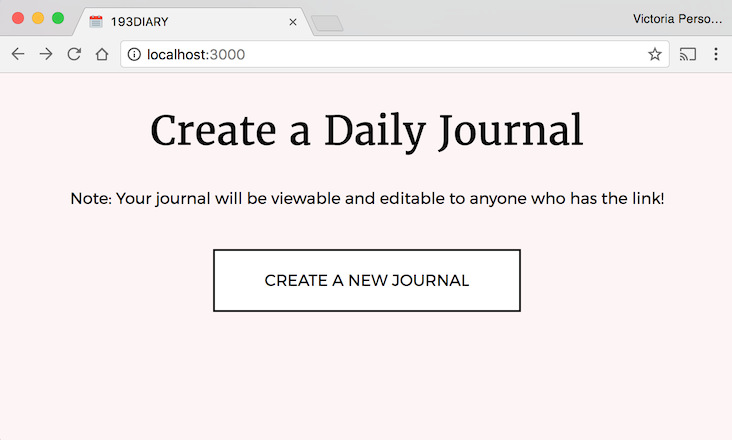
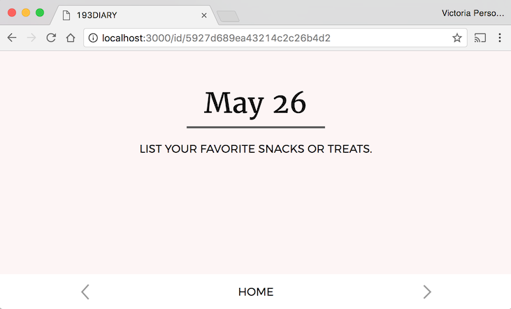
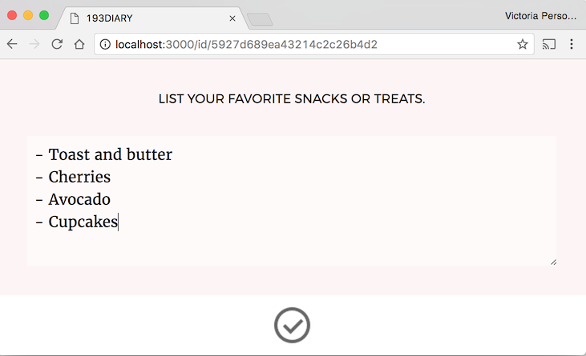
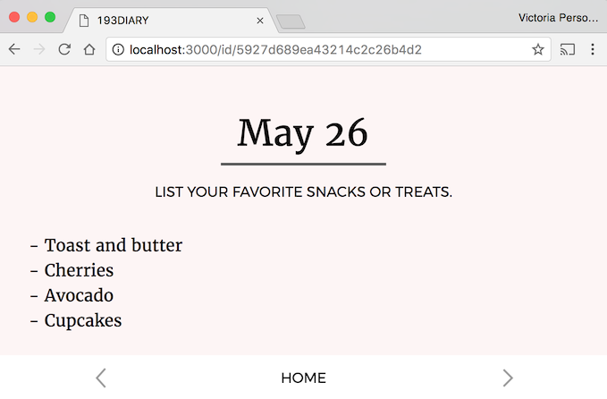
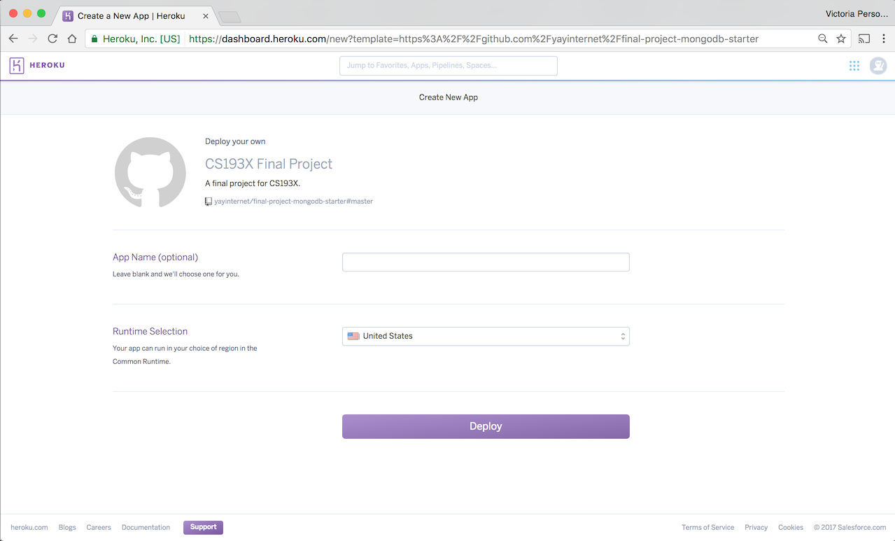
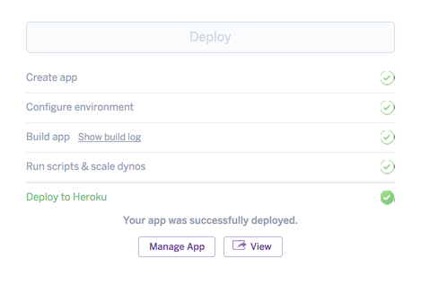
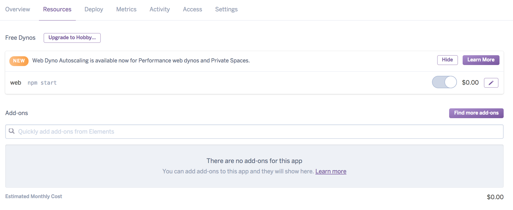
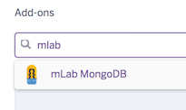
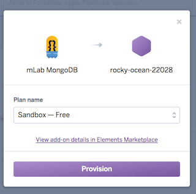
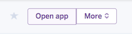

For the final project, you will be creating a web app using the key technologies we have practiced throughout the quarter. Instead of giving you a specific web app to replicate, you are given the freedom to choose what you’d like to make.
We are giving you some restrictions on what you can make, such as a list of technical and style requirements. If you do not have any ideas for a web app you’d like to make, we’ve also provided a Diary project idea that you may use. If you choose to create the Diary app, it will be graded in the same way the other final projects are graded.
Like the homework assignments, the final project is individual and you may not work in pairs or groups.
- Project requirements
- Project ideas
- Project Proposal
- Implementation milestones
- Help and Hints
- Deploy to Heroku + mLab
- Submit
Project requirements
The final project is mostly open-ended, with some specific requirements as outlined in this section.
Overall, you can receive full credit on the final project if:
- Your project meets the Logistical, Technical, and Style requirements listed below.
- You successfully deploy your site to Heroku.
- You turn in the completed Project Proposal on-time (by June 10).
- You turn in your completed Final Project on-time (by June 17).
0. Logistical requirements
- This is an individual assignment; you may not work in pairs or groups.
- The deadline for the final project:
- Mon, June 17 @ 11:59pm: Final Project is due
1. Technology requirements
In your final project, you must include the following technologies:
Frontend: HTML/CSS
- Use classes and ids
- Use
display: flex; - Include a CSS animation or transition
- Change 2+ default font properties
- Change 2+ box model properties (border, padding, margin)
Frontend: JavaScript
- Write object-oriented JavaScript
- Include 2+ ES6 classes
- Use at least one callback or Custom Event to communicate between classes
- Listen for 2+ events
- Can be the same event type, like 2
clickevents
- Can be the same event type, like 2
- Use
fetch()to talk to your backend
Backend
- Use Node and ExpressJS
- Save persistent data in some way using either MongoDB or a Google spreadsheet
- We encourage you to use a MongoDB backend, but you may use a Google spreadsheet if that is a better fit for your project.
- Include at least 1 GET route
- Include at least 1 POST route, and it should include a message body
- Optional but recommended: include at least one route parameter
Misc
- Use
async / awaitproperly somewhere in your project.- This can be in the frontend, backend, or both.
- You need to incorporate all these technologies into one cohesive web app.
- We will not be grading on things like how interesting your project idea is, how original your idea is, how “realistic” it is, etc.
- However, your project also can’t be a set of totally nonsensical code that happens to hit our checklist of technologies. Your project should be a web app, even if it’s a very small web app, or a silly web app, or a dumb web app.
- Your project should be relatively bug-free.
- It’s hard for us to judge whether you are using the technology correctly if your code is very buggy.
- We will not deduct points for trivial bugs or polish bugs, but we will deduct points for things like if the one CSS animation you included in your project is not actually working.
- This is another reason why you should aim small in your project scope.
2. Style requirements
These style requirements should be no surprise, as we’ve enforced them all quarter.
HTML/CSS:
- Use tags semantically, e.g. don’t use
<div>for every single element on your page. - No deprecated tags.
- Use descendent selectors to reduce redundancy in CSS and HTML
- You must write raw HTML and CSS, as we have done all quarter.
- i.e. don’t use SASS or compiled CSS/HTML
JavaScript:
- Must write object-oriented JavaScript.
- Must use ES6 classes.
- Avoid global variables.
- OK to use globals for constants, instantiating classes, or other reasonable scenarios
- But you should not put anything in a global variable that could be better encapsulated in a class
- Add/remove/toggle classes from
classListinstead of modifyingstyledirectly, unless you have to modifystyledirectly (e.g. if you are calculating the value of a CSS property in JavaScript) - Communicate between classes using callbacks or custom events.
- You must write raw JavaScript, as we have done all quarter.
- You may not use jQuery.
- You may not use any frontend frameworks, such as React, Angular ect.
- You may use a library like the dancer.js library used in HW4.
- You may query a 3rd party library such as the Giphy library used in HW4.
Backend:
- Your backend must be written using the Node and Express libraries
- Don’t save data to the filesystem: persistent data should be stored in a MongoDB or a Google Spreadsheet.
- HTTP methods should be used in ways that are compatible with the method definition. For example:
- Use GET for retrieving data. Do not write data in a GET handler.
- Use POST for saving data. Do not use POST to display a page.
- Don’t use query parameters with POST
3. Publishing your site
Deploying:
- You must successfully deploy your website on Heroku for turn-in.
- If you use a MongoDB backend:
- You must use the mLab Heroku add-on. See the instructions at the bottom of the spec.
Browsers:
- You must verify your site works on the latest version of Chrome.
- You do not have to make your site work on any other browser but the latest version of Chrome.
Extra credit
The following features are extra credit:
- Support user login using OAuth 2
- Mobile version
- Accessible website
Things we are NOT grading
We will NOT grade you on:
- The aesthetics of your web app
- Whether your web app is an interesting app idea
- Whether your web app is a creative app idea
- The technical difficulty of creating your web app
- We strongly recommend you build something small and simple, roughly on par with the scope of the homework assignments.
While we are not grading you on the above aspects of your project, some of these things will be considered for the contest described below.
Contest
We will be running a small contest for the final project submissions. The course staff will be selecting winners for the following categories:
- Most beautiful: Given to the most aesthetically pleasing final project
- Best code: Given to the final project with exceptionally well-written code
- Most fun: Given to a really fun final project
- Best in show: Given to the all-round most impressive final project
If your final project is a contest winner, we will drop your lowest homework score.
Project ideas
You need to decide what web app you will build for the final project. Here are some suggested guidelines for you to follow when deciding what you want to build:
Small and simple.
- You only have a little over 2 weeks for this project, and programmers tend to grossly underestimate how difficult a task is / how long something will take to implement. Try to choose something very focused and simple for the subject of your final project.
- Choose something that feels similar in size and difficulty to one of the previous assignments in this class, or the Diary app described at the end of this section.
No more than 3-5 different pages/screen in the entire app.
- For example:
- HW2: Quiz was 1 screen (the quiz)
- HW3: Flashcards was 3 screens (menu, flashcards, results)
- HW4: Music Box was 2 screens (menu, visualizer)
- We recommend you have only 1 to 3 screens in your web app, 5 at the absolute max.
- If your project involves more than 5 screens, it is probably too big in scope for the final project.
Use previous HWs as your litmus test for scope and difficulty.
- For example, if it took you 20+ hours to finish HW3, then you probably want to make something simpler than HW3. HW3 only involved writing JavaScript and did not include a backend or CSS, which you need to include on the final project.
If in doubt, build the Diary app.
- We’ve included below a project idea that fulfills the final project requirements: Diary.
- We will not grade the Diary app any differently than any other final project.
- If you are having trouble coming up with an appropriate final project idea, build the Diary app.
Project idea: Diary
If you do not want to come up with your own project idea, implement the Diary app described below. This fits all the technology requirements for the final project.
FYI: You can simplify the Diary app.
Notes:
- We will not grade the Diary app any differently than any other final project, i.e. you will not be penalized for choosing to implement the Diary app instead of original project idea.
- You do not have to make your Diary app look or behave exactly the way we’ve specified below.
- Feel free to change the appearance, behavior, etc.
- Of course, if you deviate from the Diary app described below, you need to make sure it still covers the technical requirements outlined at the beginning of the spec.
- The Diary app is not as thoroughly specified as previous homework assignments. This is intentional, since the final project is much more open-ended than previous assignments. If there is ambiguity in how the Diary app should behave, you can interpret in whatever way you choose. We will not be grading against how closely you followed our Diary spec.
Diary behavior
The Diary app is a web site that provides a way to make a simple, login-less journal. Every new journal has a unique URL that is viewable and editable by anyone with the link.
Home Screen: Creating a new journal
- When you go to the home page of your Diary app, you are presented with a button to create a new journal: 
- When you press “Create a new journal”:
- Your app should create a new journal on the backend
- The browser should navigate to
/id/<journal id>, where journal_id is a unique id generated on the server. This is the permanent URL for the diary.- You can set
window.location.href = <URL>to make the browser navigate to a URL.
- You can set
Diary Screen: Display today’s journal
- Navigating to
/id/<journal id>should display today’s journal entry for the journal identified by<journal_id>. When you first create a journal, the entry will be empty.  - Today’s date is shown at the top of the screen, as is a journaling prompt for that day.
- HINT: You will want to use the
Dateclass andtoLocaleDateString. See Hints for help and example usage.
- HINT: You will want to use the
Diary Screen: Update a journal entry
- When you click on the space under the journal, you should be able to edit the diary entry. 
- The entry should be saved when you click anywhere outside of the textarea, including the check box. This should also make the edit UI go away. (VIDEO) 
Diary Screen: Navigating between entries
- At the bottom of the Diary Screen, there is a left and a right arrow. Click either arrow to go to the previous or the next day.
- There is a different unique diary prompt for each unique day of the month.
- All days that you navigate to are editable. (VIDEO)
- Clicking “Home” takes you back to the entry for today’s date.
Persistent data
- The diary data should persist between reloads and server restarts
- I.e. data should be stored in and loaded from a MongoDB backend or a Google Spreadsheet.
- HINT: The Hints section has some suggestions on how to structure your MongoDB database.
Diary style and assets
We are not going to spec out the diary app as specifically as previous homework assignments, since we are not grading you on how closely you followed our specification.
Text properties:
- Large heading: Date and “Create a Daily Journal” text:
- Font face: Merriweather from Google Fonts
- Size: 30pt
- Small text: Subtitle, Button text
- Font face: Montserrat from Google Fonts
- Size: 12pt
- Diary entry text
- Font face: Merriweather from Google Fonts
- Size: 14pt
- Line height: 1.5em
“Create a new journal” button
- Border is 2px wide and black in color
- 20px of top-and-bottom space between the text and the border; 50px of left-and-right space between the text and the border
- Hovering over the button changes the button’s font color to white and the background color of the button to black. The color transitions from white to black in 0.25 seconds.
Background colors
- Page background is
#fdf5f5 - Textarea background color is white, with 50% opacity
- Footer background is white
Assets
- Images
- Journal prompts
{kind=link}
{kind=link}
{kind=link}
Project Proposal
The Project Proposal is due June 12 at 11:59pm. It will be graded on completion.
1. Decide on a project idea
Read the project ideas section of this spec and come up with an idea for your final project.
On the turn-in form, you will be asked to write a 1-2 paragraph description of your project idea.
- This doesn’t have to be too long or descriptive, and it doesn’t have to be a “pitch”; we just want to get a sense of what you want to make.
- If you are planning to make the Diary app, you can say so in a few words and you don’t need to write a paragraph. Please elaborate if there’s anything you plan on changing, though.
- We may reach out to you if we think your project is too difficult or otherwise inappropriate for the final project.
2. Accept the Final Project assignment
Choose whether you want to have a MongoDB or a Google Spreadsheet backend, then accept the appropriate assignment below:
Choose One:
3. Deploy the starter code to Heroku for practice
Unlike HW5, you are required to deploy your final project to Heroku. Practice doing so now so that we can work out any issues before the final project deadline.
4. Submit your project proposal and Heroku link
When you are ready, submit your project proposal below:
Implementation milestones
After you’ve turned in your Project Proposal, you are now ready to begin implementation!
We suggest the following milestones for your project:
Milestone 1: Implement the frontend UI with minimal-to-no CSS
Create a class diagram for your frontend JavaScript
- Before you begin any coding, write a class diagram for your frontend
- Suggestions:
- Create an
Appclass, similar to theAppclass in HW3 and HW4. - Make a new class for every screen in your app, similar to how that was done in HW3 and HW4.
- Make a new class for every non-trivial UI element, similar to the
Flashcardin HW3 or thePlayButtonin HW4.
- Create an
Implement one screen at a time, without CSS
- Write the HTML and JavaScript necessary to implement the behavior of one of the screens in your app. Implement one screen at a time. After each screen works individually, implement the interactions between the screens.
- Don’t write your CSS yet, or at least don’t spend too much time on CSS. You can make your web app prettier after you’ve gotten your web app working end-to-end.
Use fake data instead of fetch()
- In the areas where you are supposed to call
fetch(), fake out the data that you could get from thefetch()call. You can fake the data by creating a hard-coded JavaScript object literal and using that as if you had retrieved that data fromfetch().
Milestone 2: Design your database
Decide how you are going to store your data
- If you are using a MongoDB backend (recommended):
- What collection(s) are you going to have?
- What fields are you going to store in each object?
- If you are using a Spreadsheet backend:
- What columns are you going to have?
Write a non-server NodeJS test script to query your database
- Before you touch your NodeJS server code, write a separate NodeJS script that queries and updates your database. This way you can make sure you know how to make the right calls to MongoDB, independent of your frontend or server code.
- Example: MongoDB scripts
- This is just a test script, and it will not be directly connected to your project code in any way.
Milestone 3: Implement the backend
Move your frontend code to public/
- Move the frontend code you wrote to the
public/directory of your backend, if it’s not there already - Verify the frontend code is served statically from
publicwhen you run your NodeJS server
Write “stubs” for your routes without involving data yet
- Write stubs for all of your GET and POST handler(s), where you only do the following:
- Specify the path for the route
- Print out the parameters received
- Don’t query/update your database or spreadsheet yet
Connect your frontend to your backend
- Modify your frontend code to query your server via
fetch()with the appropriate parameters - Make sure the backend prints the correct parameters when queried from the frontend.
- Use
console.log()statements on both the frontend and backend to debug
- Use
Implement your routes
- Now implement the rest of your stubbed routes, querying or updating your database or spreadsheet as necessary.
Milestone 4: Finish your CSS
- After your website is working end-to-end, finish styling your frontend with CSS.
Milestone 5: Deploy and test
- Re-deploy your website onto Heroku.
- Test out your deployed app to make sure it still works as expected.
- Go through the Project Requirements and make sure your app fulfills all the ones we’ve asked for.
Help and Hints
Helpful web app examples
Here are links to the some of the full-stack examples we’ve coded and discussed in class:
- Example app: Dictionary
- Dictionary lookup: server-side rendering: Uses
fetchGET to do dictionary search.- (Note: The frontend is not written in object-oriented (OO) style, which is not OK for the final project)
- Uses Handlebars template with placeholders
- Note: You need to pre-populate your database with dictionary values in order to for lookup to work. You can do this by using the
mongocommand line or writing your own script. An example general-purpose MongoDB script: mongodb-scripts
- Dictionary lookup: single-page-application: Same as above, but written as a single-page-application, and and OO-style frontend.
- Dictionary lookup and set value: Look up a word and change its value. Uses
fetchGET and POST and Route parameters.- (Note: The frontend is not written in object-oriented (OO) style, which is not OK for the final project)
- Dictionary lookup: server-side rendering: Uses
- Example app: E-card
- E-card with server-side rendering: Uses
fetchGET and POST on the client side. Saves to a single collection.- Uses Handlebars template with placeholders
- E-card as a single-page-application: Same as the above example, but written as a single-page-application
- E-card with server-side rendering: Uses
- Example app: Cross-stitch (pixel drawing app)
- One global hoop: Uses
fetchGET and POST on the client side. Saves a single entry to a single collection.- Client-side is written in OO-style
- Multiple hoops: Evolution of the previous example.
- Saves multiple entries to a single collection.
- Shows querying by
ObjectID - Shows managing multiple screens: Menu screen and Edit screen
- Uses a route parameter for
lookup/:id - Uses
Routerto split upserver.jsinto multiple files
- Multiple users: Evolution of the previous 2 examples.
- Shows saving data in multiple collections:
usersandhoops - Shows an application-level join:
onLoadAllHoopsfinds the user’s MongoDB_idby searchinguserscollection by email, then gets all documents fromhoopsthat matches the_id - Show OAuth2 authentication with Google: Login and Logout
- Shows saving data in multiple collections:
- One global hoop: Uses
Diary app
Here are some specific tips for anyone coding the Diary app:
Dateclass- You will need to use JavaScript’s
Dateclass to get today’s date as well as other dates. Dateexamples: Please check this out! This shows printing a date, advancing a date, stringifying a date- Use
toLocaleDateStringto create a string date like “June 2” (mdn)
- You will need to use JavaScript’s
- Data Model
- You can think of your Diary app as having two main “entities”:
- Diaries: A diary has a unique id and is a collection of entries
- Entries: An diary entry contains the text content of the entry, and a date (Month / Day / Year, not time) belonging to the entry.
- To model this entity, consider the following structure:
- Create a “diaries” MongoDB collection, which contains one document per diary
- Create an “entries” MongoDB collection, which contains one document per entry
- Each entry has a “diaryID” field, which maps back to the diary it belongs to
- Each entry has a “date” field, but instead of storing it as an actual
Datetype, we recommend you store the date as a string like"6/3/2017". See example for how to generate a string like that from aDateobject - Each entry also contains the “contents” of the entry
- You don’t have to model your data this way, but it should make querying your data simpler.
- You can think of your Diary app as having two main “entities”:
Deploy to Heroku + mLab
Here are instructions for deploying to Heroku. Unlike in HW5, successfully deploying your final project to Heroku is required.
1. Prepare for deployment
Make sure your dependencies are up to date
Heroku will install the dependencies defined in package.json, so you need to make sure that they include all the libraries that you are using.
- Navigate to the root directory of your project. If you run
ls, you should see thenode_modulesdirectory. - Remove the
node_modulesdirectory.$ rm -rf node_modules - Run
npm install$ npm install - Run
npm start$ npm start
If you have any errors, fix them before continuing.
(Mongo-only) Test with an empty database
When you deploy to Heroku and set up mLab, the live MongoDB database will be completely empty. You should make sure your web app still works with an empty database.
- Make sure
mongodis running and in a separate terminal, runmongo$ mongo - Switch to the database your server is using. (Change DATABASE_NAME to whatever name you’ve given your database.)
$ use DATABASE_NAME - Delete the database
$ db.dropDatabase() - Run your server with
npm runand test your web app.
If you have any errors, fix them before continuing.
Upload everything to GitHub
Before you deploy to Heroku, make sure you have uploaded all files to GitHub. Heroku uses the files on GitHub to know what to deploy, so it must be up to date.
2. Deploy
Note: If you are using a MongoDB database, you need to do a few extra steps. Please make sure to follow the extra steps below.
- Create a free Heroku account, if you don’t have one already
- Once your account is created and verified, you can deploy your app by visiting the following link (of course, replace
<YOUR-REPOSITORY-NAME>with the name of your repository):https://heroku.com/deploy?template=https://github.com/yayinternet/<YOUR-REPOSITORY-NAME>
- When the page loads, click the purple “Deploy” button. 
- When the deployment finishes, you should see “Your app was successfully deployed.” 
If you have a Google Spreadsheet backend:
- You’re done! Click “View”
- This will take you to your deployed app, which will look like
http://some-autogenerated-name.herokuapp.com
If you have a MongoDB backend:
- You will need to set up an mLab database. mLab provides hosting for MongoDB databases, and luckily, there is easy integration with Heroku.
- NOTE: You may have to enter in a credit card number, but you will not be charged for anything. If this makes you uncomfortable, use the Spreadsheet backend.
- Click “Manage App” and continue the instructions below.
- (Mongo-only): Click on the “Resources” tab. 
- (Mongo-only): Under “Add-ons”, search for “mLab”. When the option appears, click on it. 
- (Mongo-only): A dialog box will pop up when you click on the mLab option. Click “Provision” 
- (Mongo-only): Now your web app and database should be set up! Click “Open App” in the upper-right corner. 
Troubleshooting
If you have problems with your Heroku deploy, try the following:
1. Make sure you have followed the Prepare for Deployment steps
If you’ve followed all the preparation steps and your deployement still doesn’t work,
2. Look at your Heroku logs
To do this:
- Install the Heroku command-line tool
- In your terminal, run:
$ heroku logs --app <app-name>where
is the autogenerated name like mysterious-bunnies-23422 (or the custom name, if you specified one)
Read the logs to see what the error is. Fix your code and deploy again.
Submit
Submit the two project deliverables using the links below:
June 12: Project Proposal
See Project Proposal for details. Submission form below.
June 17: Final Project
You will turn in the following artifacts for your final project:
- A link to your final project GitHub repository
- A link to your deployed, working Heroku app
- A brief description of the app you created and the features you’ve made
- A video walkthrough of your final project. See details below.
Submission form:
Video walkthrough
- We will not be grading your video, other than for completion. We just want to understand how we should use your app.
- Required even if you do the Diary app
- Contents of the video
- The video should be a screencast of your final project. Show the features that you’ve implemented in the video.
- NO need for voiceover / polish / fancy transitions / etc: You will not be graded on this.
- Upload your video to YouTube or Google Drive and make sure you give Read-permission to everyone with the link
- If you absolutely cannot make a video, you can make a Google Doc with screenshots instead.
- Make sure you give Read-permission to everyone with the link
Creating a video
- Here are some tutorials on how to create screen captures:
- Mac (quicktime)
- Windows 10 built-in
- Screen Recorder and tutorial
- If you can’t get any of the above to work, you can also just use your phone to record your screen
- Uploading to Google Drive (or youtube, etc)
- Upload your video someplace we can see it.
- Google Drive Upload and Share
- If you absolutely cannot make a video, you can make a Google Doc with screenshots instead.
- Make sure you give Read-permission to everyone with the link